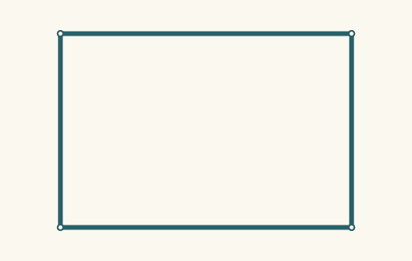
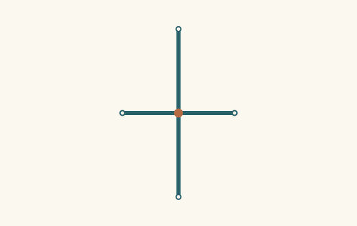
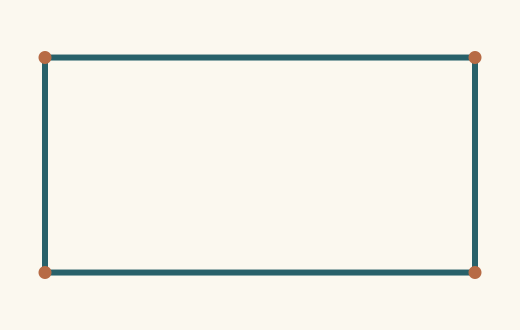
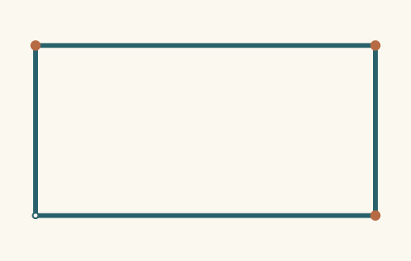
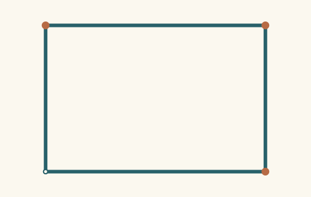
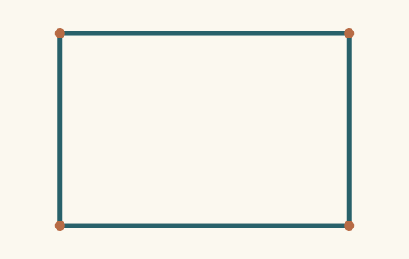
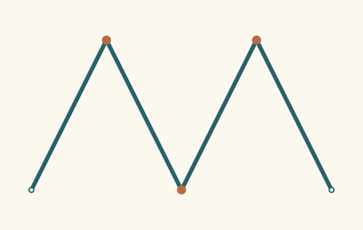
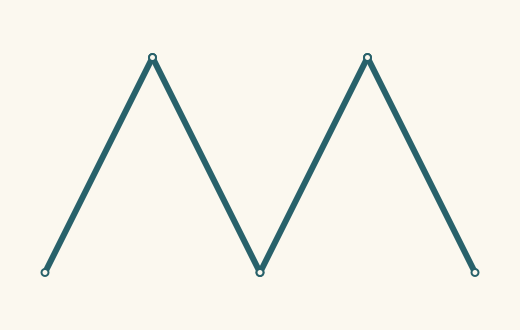
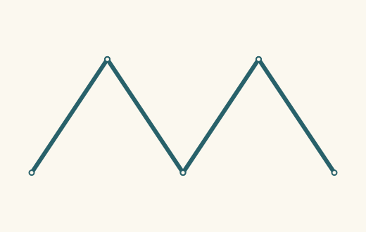
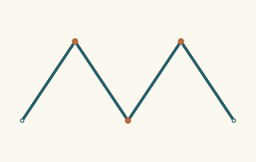

Communication · concrete samples · independent reads Interactive comparison · Captured summaries
One illustrative target, a receiver sample from sparse hints, and a sample after one additional hint. Dots mark actual shared sites; hollow markers mark endpoints. Different proportions can satisfy the same partial message.
Fragments first · first extent
One example of the sender's intended structure Before · Four coincident independent arms / extent 1Sender commitment did not survive After · One four-arm junction / extent 1Sender commitments supported
Add one required native pattern after inspecting the failed commitment.
Open paths first · second extent
One example of the sender's intended structure 
Before · Four separate contour sides / extent 2Sender commitment did not survive 
After · One four-arm junction / extent 2Sender commitments supported Add one required native pattern after inspecting the failed commitment.
Fragments first · first extent

One example of the sender's intended structure 
Before · Unjoined endpoint return / extent 1Sender commitment did not survive After · Closed four-sided contour / extent 1Sender commitments supported Add one required native pattern after inspecting the failed commitment.
Open paths first · second extent
One example of the sender's intended structure 
Before · Unjoined endpoint return / extent 2Sender commitment did not survive 
After · Closed four-sided contour / extent 2Sender commitments supported Add one required native pattern after inspecting the failed commitment.
Fragments first · first extent

One example of the sender's intended structure 
Before · Separate alternating strokes / extent 1Sender commitment did not survive After · Connected alternating path / extent 1Sender commitments supported Add one required native pattern after inspecting the failed commitment.
Open paths first · second extent
One example of the sender's intended structure 
Before · Separate alternating strokes / extent 2Sender commitment did not survive 
After · Connected alternating path / extent 2Sender commitments supported Add one required native pattern after inspecting the failed commitment.
Inspect discovered pattern families · Native evidence archive